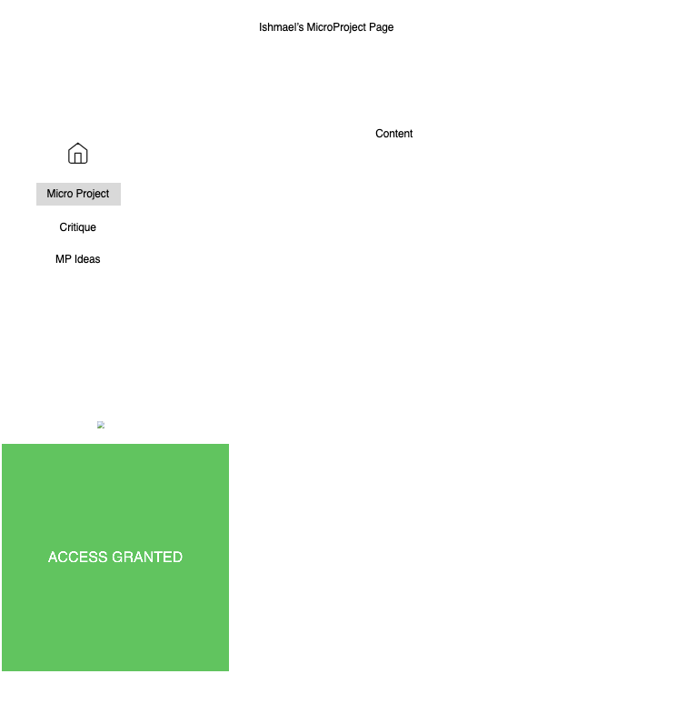

The desktop layout is functioning. The sidebar, title areas, navigation elements, and content window are all positioned correctly according to the original Figma design. I also successfully replaced the placeholder content image from Figma with a live p5.js canvas container so that the sketch now runs directly inside the interface rather than as a separate standalone page.
The main structural issue that is still incomplete is the scaling and positioning of the p5 sketch itself.. The canvas does not fully fit or respond correctly within the intended frame. This exposed a major difference between designing static frames in Figma and implementing responsive structures in code.
The logic from Figma holds most strongly in terms of visual hierarchy and spatial organization. The desktop size, side navigation, and content regions translated well because they relied heavily on fixed positioning and visual composition... That begins to break once dynamic content is introduced. In Figma the content window acted like a static shape, but in HTML/CSS the browser interprets the p5 canvas as a live element with its own sizing behavior. This created conflicts between the dimensions of the container and the dimensions generated by JS.
One thing that surprised me in code was how much the browser depends on document flow and parent-child hierarchy. In Figma, layers can overlap freely without affecting one another, but HTML elements depend on structural nesting and CSS positioning rules.
HTML also assumes hierarchy and semantic structure, meaning elements inherit behaviors from their containers. This sometimes collided with the Figma export because many elements used absolute positioning without considering responsiveness. Overall, this process showed me that interface design in Figma is only one layer of the system, while implementation in HTML, CSS, and JavaScript introduces an entirely different structural logic that must account for responsiveness, hierarchy, and live interaction.
